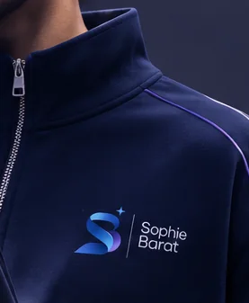
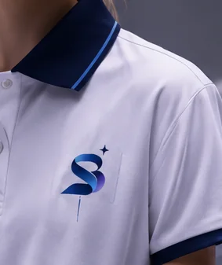
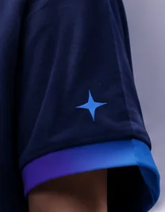
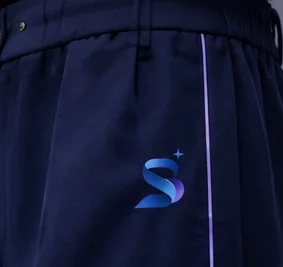
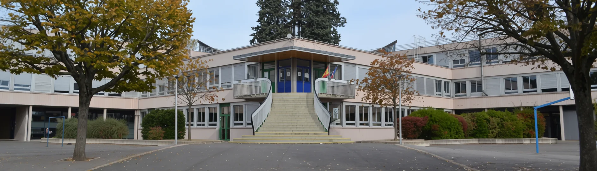
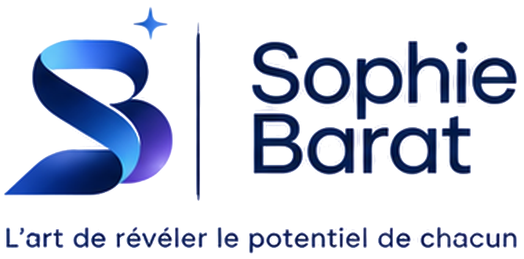

01
Virtual school things
No more heavy school bag, books or pencil case. Everything is on a tablet, or appears as a hologram just above your hand.
Groupe scolaire Sophie Barat
The art of revealing the potential in everyone.
Sophie Barat · Collection
A collection conceived as a true clothing line: easy-to-wear essentials, signature details and a palette shared by the whole Sophie Barat community.





Fabrics, cuts and finishes are design proposals: they will be finalised once approved by the school.
Tomorrow at Sophie Barat
A few ideas for what a day at school could look like tomorrow: lighter, smarter and made for everyone.
No more heavy school bag, books or pencil case. Everything is on a tablet, or appears as a hologram just above your hand.
Tap on a tablet and create the room you need. A music room, a sports hall or a science lab appears in seconds.
Moving walkways run along the corridors. Getting from one classroom to the next is quicker and easier.
A shop inside the school sells uniforms and school supplies. Everything you need is just a few steps away.
3D configurator
Choose the girl or boy model, switch pieces with the arrows, try the four colours of the palette and explore every finish in 360°.
The school
A space that shines a light on the identity, projects and journeys of the Sophie Barat community.

The school is named after Saint Madeleine-Sophie Barat (1779–1865), an educator who devoted her life to the education of young people.
Madeleine-Sophie Barat is born in Joigny, in Burgundy.
She founds the Society of the Sacred Heart, devoted to the education of young people.
A new visual identity and a uniform collection.
High ambitions, a caring approach to teaching and a school that is open to the world.
Personalised mentoring, guidance and extra help, so that no student is left behind.
Year groups, pathways and options, so that every student can find their own path.
School life
Projects, initiatives, events and highlights from life at the school.
Sport, arts, societies and clubs: a chance for everyone to try something new.
Educational, charitable and cultural projects led by students and staff.
Open days, ceremonies and trips that bring the whole school together.
News
The SB monogram and the midnight blue, electric blue and violet palette now carry through the school’s materials.
The pieces in the collection are showcased in a 3D configurator: model, piece, colour and details.
Holograms, rooms created in seconds, moving walkways and a school shop: four ideas for tomorrow’s school.
Discover the ideasOur identity
Two letters, a ribbon and a star. Each part of the logo says something about the school and the people who make it.

123 456The S stands for Sophie, the first name of Madeleine-Sophie Barat.
The B stands for Barat. It grows out of the S, so the two letters form a single monogram.
The blue and violet ribbon is the link between students. It ties everyone together, from one colour to the next.
The star shows that every student can shine, in their own way.
Simple, modern lettering keeps the name clear and easy to read, on a badge or on a screen.
“The art of revealing the potential in everyone”: helping each student discover and grow their talents.
Five colours, from deep to light, shared by the logo, the uniforms and the website.
#061638The main colour: calm, serious and trusted, like the night sky where the star shines.
#087DFFEnergy and curiosity: the colour of new ideas and of the future.
#672DFFCreativity and imagination, adding a touch of boldness to the blue.
#F7F9FFClarity and openness: a fresh start and room to grow for everyone.
#EEF1F8A soft, neutral background that keeps everything calm and easy to read.